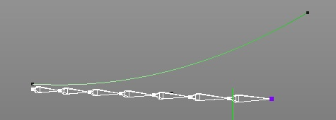

|
The Spline IK tag can be used if you want a a joint chain to
follow the shape of a spline object. For example to animate the
tail of a animal you no longer have to animate every single joint
but just the spline control poaints.
Example:
Lets see at an example how to set up an IK chain for the right
arm of an character.
- Lets assume you already have a skeleton (joint chain) and a
spline.
- Select the tip of the joint chain and attach an Spline IK tag
to it via the toolbar.
- Assign the spline object to the target property of
the Spline IK Tag.
- You are done. If you now change the shape of the spline the
joint chain will follow it.

In the first image you see a spline and a joint chain.
In the second image the joint chain was bound to the spline via
the Spline IK tag.
The joint chain now follows smoothly the curve.
Properties:
- length: The length of the IK chain.
- offset: The offset of the IK chain.
- roll: The total roll of the IK chain. Change
this value if you want the joints to twist around the spline.
- target: The spline object which the joint chain
tries to follow.
- color: The color of the Spline IK handle and
the line connecting the IK handle with the root of the IK chain.
|